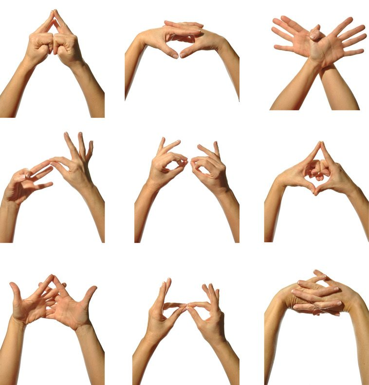
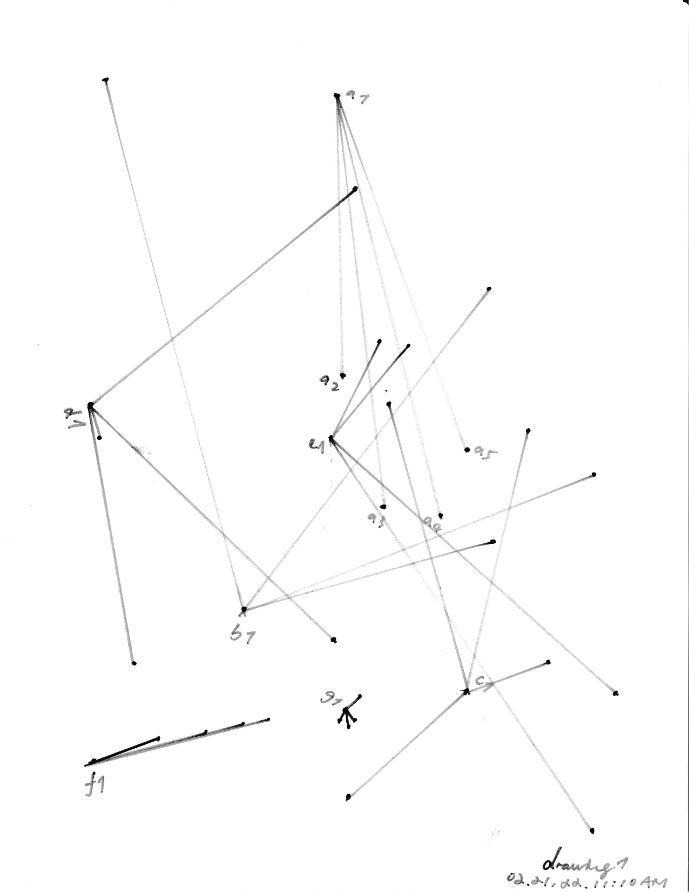
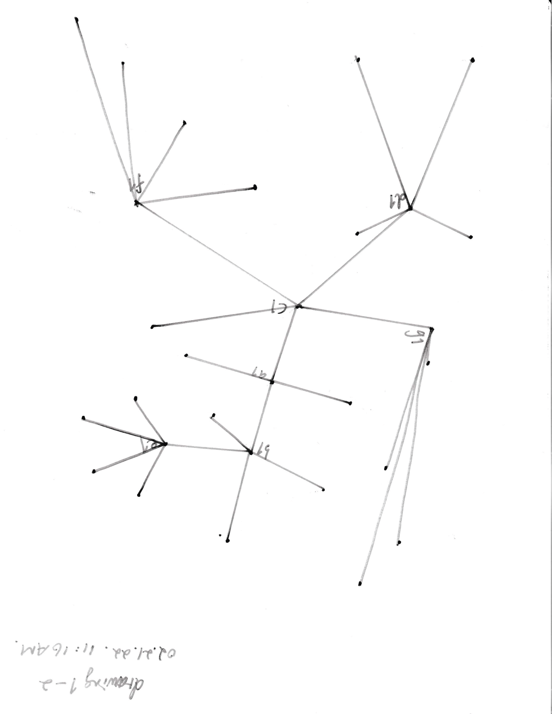
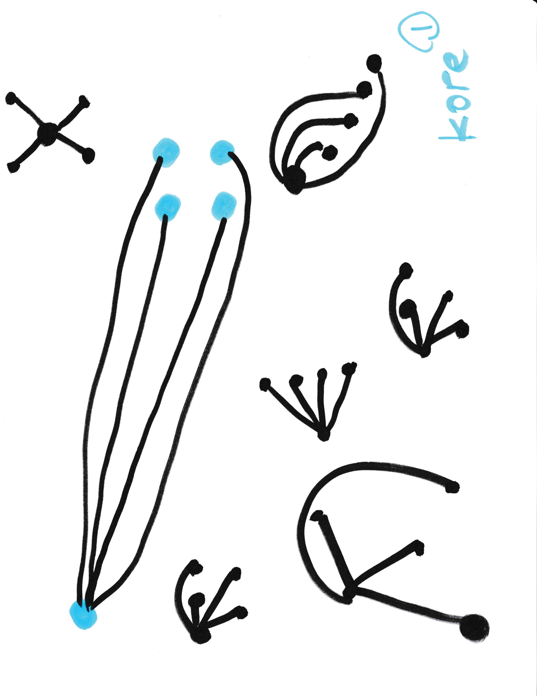
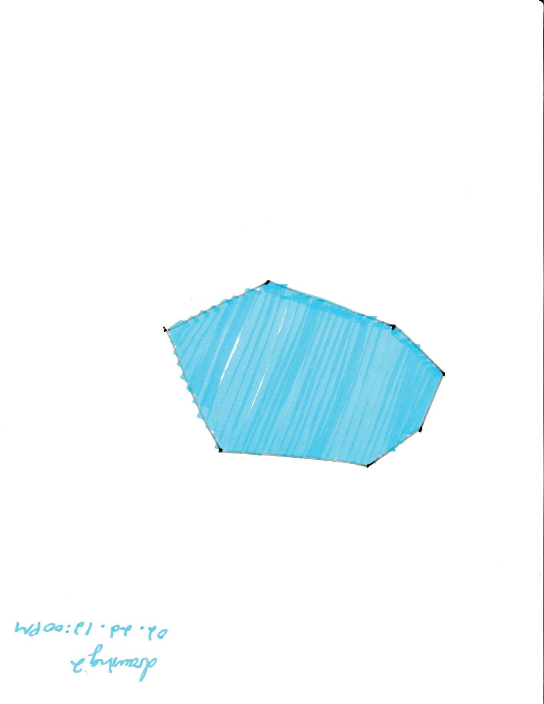
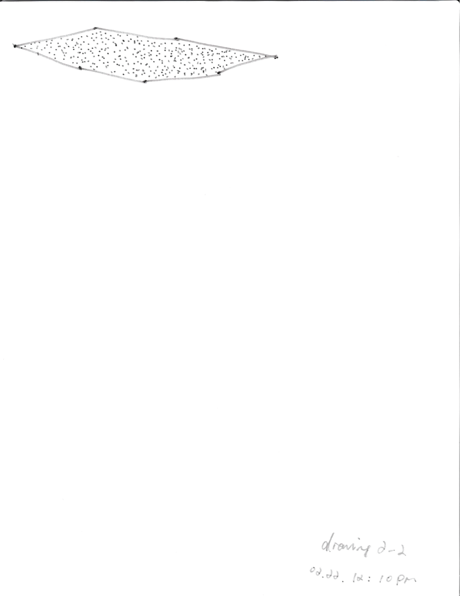
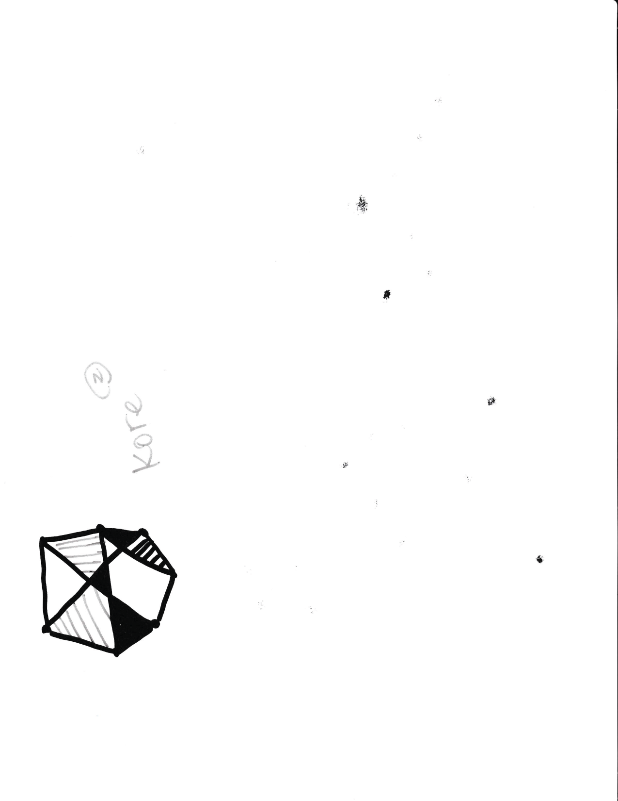
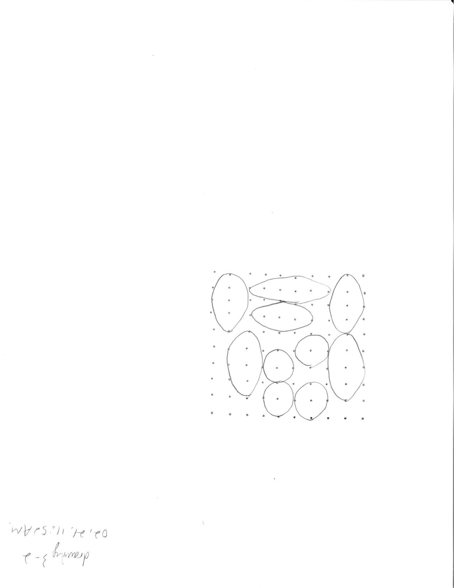
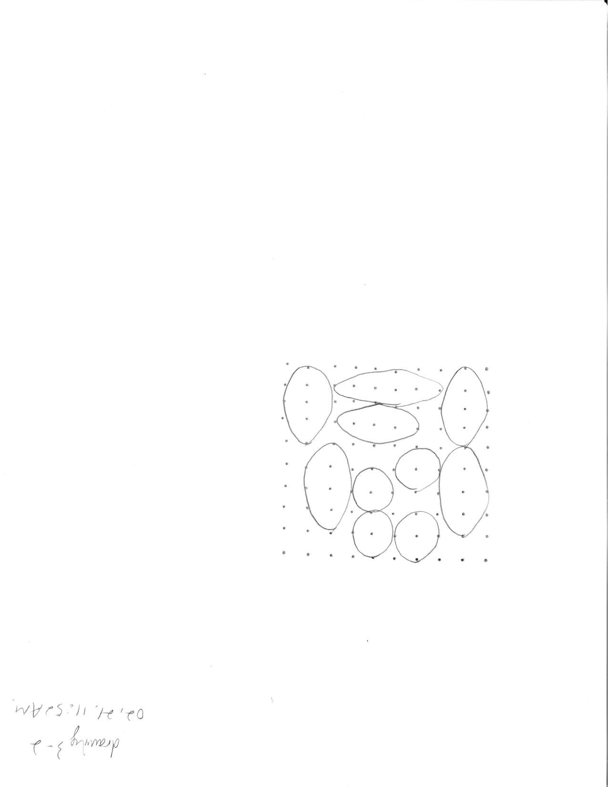
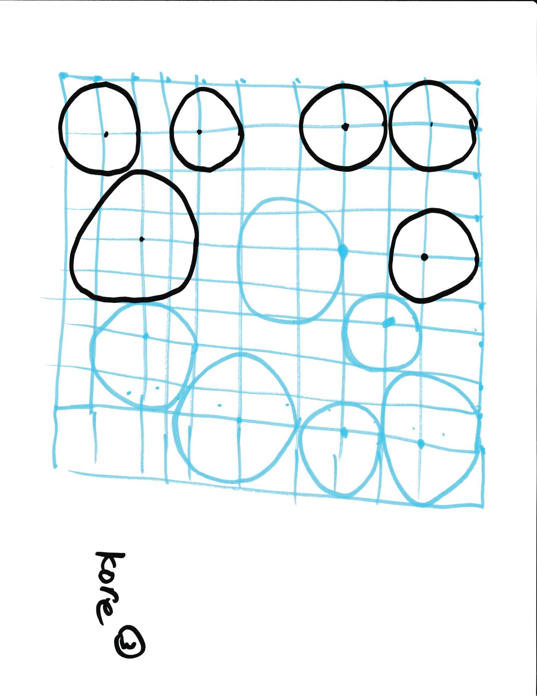

thread
02.02.2022 
A mudra(/mu'dra:/); Sanskrit: मुद्रा, IAST: mudrā, "seal", "mark", or "gesture"; Tibetan: ཕྱག་རྒྱ་, THL: chakgya,) is a symbolic or ritual gesture or pose in Hinduism, Jainism and Buddhism.[1] While some mudras involve the entire body, most are performed with the hands and fingers.
this one it is.
reflection here:
on Surf Clubs
- "information should be free"
it should be made accessible and at least shouldn't fry your laptop - "freedom for users"
it's kinda interesting that this article focuses on the browsing journey that people used to enjoy, which allows the extent of autonomy that is inviting and limitless. Example used here was NFTs, but apparently people are creating web-based NFT projects now - community
could be what the functional sites wouldn't prioritise. the del.icio.us site succeeded to do with the tagging interaction, user engagement was fostered by 1.single function 2.archival feature. also theres just no ads or algorithm(filter bubbles) that pushes you away - "why web needs to be sheltered in web"
this could be tangent but another reading from Fred Wilson about how space used to display artworks have significant affects on viewers perspective. he experimented by framing three types of exhibition space in "Room with a view: the struggle between cultural context and context of art": the white cube, the small ethonographic museum, the turn-of-the-century salon space. all pieces presented withou lable. found out surprisingly that not only the viewers were confused but the curators and even the artists were some extent intervened in terms of distinguishing and creating. web should stay perculiar to the format it has always been embedded. - "I understood this as the difference between the thing of beauty that was found online while surfing - an image or ab it of information - and the journey towards a thing. In myeyes, it enabled thinking about an entire conversation as an artwork, instead of a single argument, piece or comment.
updated on structure(mobile, position, myZone)
reflection on:
Jodi's Infrastructure
- like last week's reading the essence of that web shouldn't be displayed in a gallery space for that would bypass the peculiar digitality of web
- -some programmers or engineers think of the machine as a tool to be used in pursuit of some larger design strategy. digitailty is context or condition- it makes sense cause the art that work 'within' the digitality can truly take off from the dependence on the context. and i really like how art of code is portrayed here: art: but code derives its beauty, its very identity, from an analysis of function and its accurate formalization in logical and mathematical structures
- infrastructural modernism: they are technologists who insist that the beauty of code comes from
function and elegance but from a different set of virtues - dysfunction and inelegance to be
sure, but also confusion and excitement, violence
and energy: the computer as medium:
this reminds me of this reading defining new media that basically, numericial representation and automation are principling, it is truly unique and self-driving devices that reside in every corner in the internet world and its massive capacity gives you the freedom to: make rules and let go of them. jodi's works have to live on the this medium.
W. Bradford Paley, CodeProfiles, 2002
CodeProfiles looks at the computer program as text and visually comments on how code is read by people, written by programmers, and executed by computers. Reflecting on its own construction, the work consists of the code that makes the code visible on the screen. Three points in code space are indicated: the amber line follows the fixation point, tracing how people might read the text, line by line; the white line follows the insertion point and flows like the programmer’s thoughts, calmly in one place then jumping around to make other parts of the code perform; and the green line moves along the execution point of the program, creating wide swaths where the code was executed thousands of times and appearing as a thin thread where the processor rarely visited. W. Bradford Paley thereby foregrounds the conceptual nature of all digital art, which is always driven by a language formulating instructions.

grouping and archiving myZone creations
drawing instruction exercise
drawing 1
- take a pen/pencil/marker and a sheet of 8.5in x 11in paper
- draw a dot(anywhere on the sheet), draw 4 dots(anywhere on the sheet)
- connect the five dots to the first dot
- repeat (2) + (3) for 7 times
- mark your sheet with your name/symbol for documentation
example output

my friend's creation:
drawing 2
- take tools from prepared pen/pencil/marker and a sheet of 8.5in x 11in paper
- draw an heptagon by connecting 7 dots(doesn’t have to be perfect)
- fill the heptagon any method you like
- mark your sheet with your name/symbol for documentation
example output

my friend's creation:
drawing 3
- take a pen/pencil/marker and a sheet of 8.5in x 11in paper
- draw a 10 * 10 grid with dots
- pick a dot on the grid to begin with (the centre)
- draw an ellipse using the other dots on the grid
- repeat (3) and (4) but avoid overlapping the ellipses
- stop the process while 70% of the grid is filled
example output
 

my friend's creation:
Grapefruit_yoko_ono
to tour the apartment in Midtown
to decide to watch a movie
to rush into the movie & assume plenty of time before the ads end
to walk out and decide to watch another movie that the only way to wedge the time perfectly is to
walk to another AMC nearby
\
to encounter a psychic
If a psychic outside of theology or spirituality is not legit, then the craftmanship of seeing
people through is art or technology.
Concept design games book 2: playing
Playfulness:
I think Control, Interaction, Transformation are the main factors of entertainment of life, sources
of joy and contentment. Games in that sense do sound like commercialised fantasy and I don’t see why
they are bad for your health.
Engineering:
In details, the storytelling aspect of games is critically heightened.
"Interactivity is almost the opposite of narrative; narrative
flows under the direction of the author, while interactivity depends
on the player for motive power" --Ernest Adams
[(1)](http://web.mit.edu/~21fms/People/henry3/games&narrative.html?utm_campaign=Narrative%20Design&utm_medium=email&utm_source=Revue%20newsletter#2)
The idea of nonlinear narrative and “interactive cinema” is fascinating, the prime framework of a
game setting should be included in the iteration of game design and that provides inspiration for
all disciplinary of design. I take this point from Henry Jenkins as main inspiration:
Many games *do* have narrative aspirations. Minimally, they want to tap the emotional residue of
previous narrative experiences. Often, they depend on our familiarity with the roles and goals of
genre entertainment to orientate us to the action, and in many cases, game designers want to create
a series of narrative experiences for the player. Given those narrative aspirations, it seems
reasonable to suggest that some understanding of how games relate to narrative is necessary before
we understand the aesthetics of game design or the nature of contemporary game culture.
Franke Computer graphics-Computer Art
GRAPHIC mag
How might computational approaches inform contemporary graphic design practices?
The use of mathematical calculations, or “computation,” is most commonly
associated with using algorithms in programming, and may at first seem
distant, if not daunting, for one who sets out to consider the
implications of using computation in design. What is certainly paramount
to the field of computer science, computation and computational
approaches are far from receiving neither widespread appreciation nor
comprehensive understanding when brought in tandem with graphic design.
P95 Alienated Science:
Everyday objects that ‘bear no apparent relation to art’ as aesthetic forms. Scientific pictures
that are used to obtain data or information is considered of utility, purpose and further boundary
for creating art. The solution to blur that boundary is to approach it with sheer pleasure in
graphic experiment: discarding professional ends, they begin to manipulate structures in conformity
with aesthetic notions.
form+code-raes
Visual Arts: as much as convention’s definition or emphasis on the visual part thats perceived by
the eyes, I guess we often overlook the crafting part thats created and done with hands. Writing and
thinking in the ways of creating codes is differed from the literal language we are used to,
consider the capacity of softwares and computers that allows us to process a tremendous amount of
information, it encourages a new way of thinking.
Procedural literacy(p17): examplified the sense of representation, writing rules that generate
representation that challenges the authority of representation⇒mind-changing. This example of
mind-blowing moment kinda reminds me of one time I encountered a design principle in computer
program: SoC(Separation of Concerns) the idea of a modular program that does sectioning and handling
layered information. There is a prioritisation that deals with whats most affecting the outcomes and
the flow of work is just not what I am accustomed to with half of my brain not fully developed.
information-ages-hobart
"information ages." The first of these was a preliterate era, when people relied on the spoken word
to transmit their thoughts and memories. Claiming that in this time there was no distinct
information, as records and human action were inextricably entwined. During the second period,
literacy allowed people to create information, separate from narration. Systematic attempts to
classify this information created what the authors call an age of wisdom. Toward the end of this
period, the advent of the printed book made it possible to transmit accumulated facts and
classification schemes far more widely and uniformly.
“Perhaps the most immediately striking feature of today’s information is its unprecedented
profusion, which stems directly from computer technologies”
source-arcangel

Software:” …has been compared to mechanical machines, thought processes, evolutionary biology,
mathematics, and much more”(very touching)
The preservation for software(really hard and requires a lot)It is much appreciated that allowing a
piece of culture to be taken care of by culture itself: preserving the culture like smart contract +
making more people lay their eyes on the source to survive!
NFTs and Readymade Reversed_joselit
Readymades reversed: as to index and protect the authorship of artworks⇒great, revolutionary
technical import⇒ such that they could overturn many common and unequal practices within the
contemporary art market (Rennie et al.)
digital art⇒better way to be viewed, sold, collected. the solution⇒no(still not the best way to
preserve environment)
History of art transforming into financial asset: While NFTs are reawakening interest in the
question of artistic value, the financialisation of cheaply made and mass-produced artworks has a
much longer history. Indeed, by the 1960s, a booming secondary art market that traded in
increasingly expensive, yet cheap-to-produce avant-garde works—often requiring relatively small
amounts of time and inexpensive materials—raised suspicions that art was becoming indistinguishable
from more traditional financial assets. In response, in 1968 the influential art critic Leo
Steinberg argued that, “avant-garde art, lately Americanized, is for the first time associated with
big money. … Another decade, and we shall have mutual funds based on securities in the form of
pictures held in bank vaults” (quoted in Beech 300). As Dave Beech has shown, in the ensuing period,
“art’s relationship to finance capital has outstripped Steinberg’s worst fears” (Beech 301). By the
1980s, banks allowed individuals to borrow large sums of money against the value of their art
collections, and investment in artworks became a normal practice of portfolio diversification (Beech
299–300). When interest rates are low, investments in productive capital offer low levels of
liquidity, and international markets appear vulnerable to shocks, artworks—whether physical or in
the form of an NFT—offer a means of hedging against future losses. Furthermore, in both the
contemporary art market and the NFT market, purchases of artworks at inflated prices often allow an
individual to prevent “the bottom from falling out of a market they have already invested in”
(O’Dwyer).
The fact that artworks could hold a value well in excess of the cost of the materials or labour time
required to produce them, was not solely recognised by art collectors and investors.
automation, laziness and post-work
the end of work is a lot of work, the trope of ai artwork that cant go beyond than narrative, visual
metaphor, or a project. I thought of Ai-Da as I read this part,
 the artist robot that created artwork independent of human input, she has created artworks in
traditional art medium such as painting, drawing and even sculpture. (The Ted talk was unexpected,
which i am pretty sure was scripted not by herself)
the artist robot that created artwork independent of human input, she has created artworks in
traditional art medium such as painting, drawing and even sculpture. (The Ted talk was unexpected,
which i am pretty sure was scripted not by herself)
not saying it is countering the idea but at least it is providing a chance to subverse and a
conversation. The self portrait she created is so meta: the robot that lives on the program that
human wrote to create something that discusses the idea of a "self" that does not quite exit:
according to the robot herself, she is not conscious
Understanding Media_Marshall McLuhan
productive version: automation to guide the love and learning:
As time is being reconsidered. Our linear conception of time is a relic of a mechanical world. Time
has allowed us to increase
output by breaking processes into steps, and allowing the coordination
of those steps amongst people and organisations. But as electric technology is allowing free
information flow, and automation is making “work” obsolete, creativity is becoming more important.
pessimistic version:
decentralism, panic:
ranting: automation is my fear(in the conclusion) for the future because i got absolutely zero
artistic autonomy or it has not come into shape yet. It is much of a thought in the past, though I
believe in great things like the result of decentralism and diversity, at the same time also a
community that will go through hard times together(a Chinese communist whose creativity was killed
because of laziness that stopped me from learning but it isnt too bad because continous learning
will expend that)At this point is like insert Kardashians unconsciously commenting on the DoL: it
seems like nobody wants to work these days
Screen Relation_today's art and its technological arts
Operational realism:
“…traditional function as an object of contemplation, and its more or less virtual in the
socio-economic arena”(beautifully written about the paradox that glued art and technology together:
the stigma)
Therefore, I guess, refer back to the new way of thinking as you write code(Technology as an
ideological model from trace to programme)
Art’s function⇒bring in life possibilities(Nietzche) “reversing the autority of technology in order
to way of thinking, living and seeing creative” this is quite of a synopsis what the several ideas
we have read in the past several weeks(i think) What computing is consist of that establish this way
of thinking: processing data and the development of user-friendly technologies. The production
possibilities entangled with technology, computer and the camera will rise the relationship of
existing between people. Essentially, inventing the way of living by imagining a new integrity of
technologies, culture, society, and anthropocene(too, maybe?).